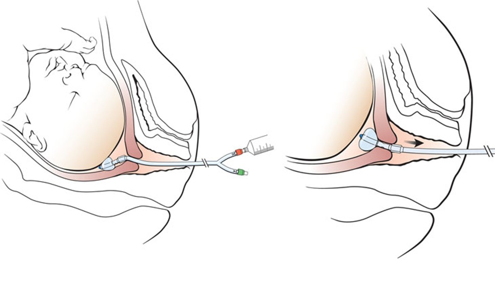
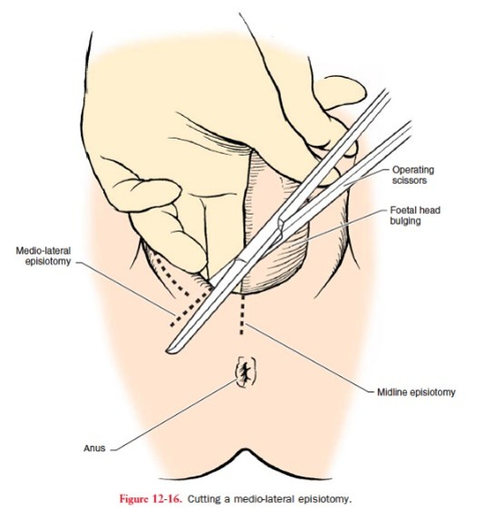
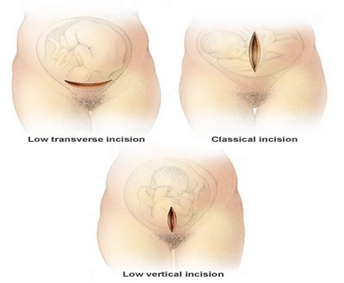
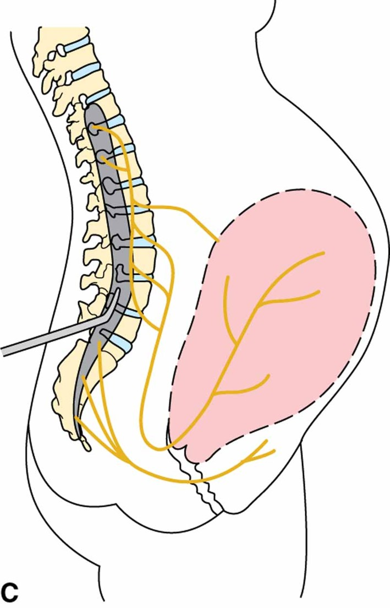
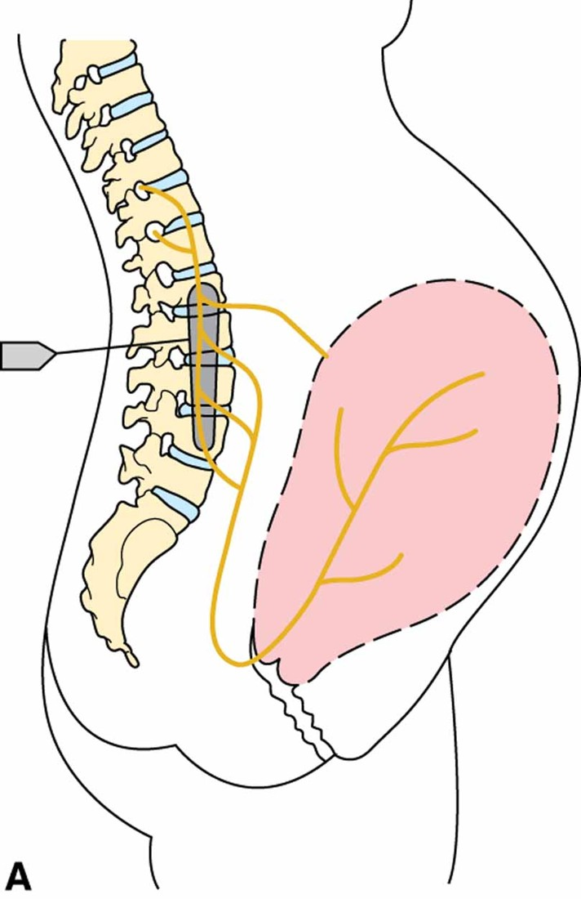

Week 4 · Topic 1
Artificial Management of Labor
Labor Induction
Induction promotes labor in someone who is not laboring. (Augmentation, later on this page, speeds up labor that has already started.)
Advantages
- Labor usually occurs within about 24–48 hours
Disadvantages
- Contractions begin less gradually and become much more intense in a shorter time
- Possible dysfunctional uterine pattern — oxytocin can make the uterus contract too frequently
- Increase in bloody discharge
Before an Induction Can Be Started
| Step | Why |
|---|---|
| Assessment & vital signs | Baseline maternal status |
| Consent forms | Signed before the procedure begins |
| Reactive non-stress test | Confirms the baby is not already showing signs of distress |
| Sterile vaginal exam | Provides the findings needed for the Bishop score |
| Bishop score | Estimates how likely a vaginal delivery is |
The Bishop Score
| Factor | 0 | 1 | 2 | 3 |
|---|---|---|---|---|
| Cervical Dilatation | Closed | 1 to 2 cm | 3 to 4 cm | 5 cm or more |
| Cervical Effacement | 0% to 30% | 40% to 50% | 60% to 70% | 80% or more |
| Fetal Station | −3 | −2 | −1, 0 | +1 or lower |
| Cervical Consistency | Firm | Moderate | Soft | — |
| Cervical Position | Posterior | Midposition | Anterior | — |
A score of around 8 or higher is considered a better, more favorable score.
Ripening & Induction Methods
| Method | What It Is / How It Works | Key Points |
|---|---|---|
| Amniotomy (AROM) | Artificial rupture of the fetal membranes with an amniohook or similar device, creating a small tear so fluid escapes | Done by an OB, nurse midwife, or NP. Used to induce labor, to augment labor, and to allow internal monitoring (FSE, IUPC). Check the fetal heart rate when the membranes rupture. |
| Foley bulb mechanical | A bulb placed against the cervix puts pressure on it just as the fetal head would, releasing prostaglandins to soften the cervix and cause cramping | Advantages: cervical effacement, shorter labor, lower oxytocin requirement, vaginal birth within 24 hrs for most women, may reduce C-section rate. Can be used along with oxytocin. |
| Misoprostol (Cytotec) prostaglandin | Given vaginally to stimulate contractions and thin the cervix. Typical dose 25 mcg every 6 hours | Cannot be removed once placed — the body absorbs it. Do not start an oxytocin induction within 4 hours of the last dose. |
| Dinoprostone (Cervidil) prostaglandin | 10 mg vaginal insert, left in place for 12 hours. Looks like a flat tampon with a string attached | Can be removed by pulling the string (this won't undo what's already absorbed, but stops further absorption). Stay in bed after placement so it stays in the posterior fornix; teach her to pat dry after using the bathroom. |
| Stripping the membranes non-pharmacologic | The provider separates the amniotic membrane from the lower uterine segment, releasing prostaglandins that stimulate contractions | Only an OB, nurse midwife, or NP performs this. Often uncomfortable; she may notice some vaginal bleeding afterward. |

Tachysystole covered again here — review in Intrapartum II if needed
Oxytocin
Used to induce labor and to augment it. You will almost certainly care for a patient on oxytocin in clinical.
Before Starting, and While It Runs
Pre-induction checks covered again here — review in Labor Induction if needed
| Requirement | Detail |
|---|---|
| The same pre-induction checks | A reactive NST and a vaginal exam with a Bishop score are required before oxytocin, just as they are before an induction. Sometimes a Foley bulb is used along with the oxytocin. |
| Continuous fetal monitoring | Required — the patient must not contract too much, and the baby must tolerate the medication |
| Titration | Increased about 1–2 milliunits/minute every 30 minutes |
| Blood pressure | Check a blood pressure before every titration |
| Administration safety | Mixed with D5LR, 0.9% normal saline, or lactated Ringer's. Use a volume control (buretrol) and put in only about 2 hours of medication — standard for any high-risk med, in case the pump malfunctions |
Risks of Oxytocin
| Risk | What to Know |
|---|---|
| Contracting too often | Too much pressure on the uterus; can cause it to rupture |
| Water intoxication acute hyponatremia |
A large amount of oxytocin has an antidiuretic hormone–like effect. She may be confused, lethargic, and vomiting, and could have a seizure; uncorrected it can lead to coma and death from cerebral edema. Stop the oxytocin, give 0.9% normal saline, and give furosemide to get rid of the fluid. |
| Postpartum hemorrhage | The odds of PPH rise significantly after 7–12 hours of oxytocin — about 51% more likely with a labor induction; even 4 hours or more raises the risk. The oxytocin receptors are already saturated, so after delivery the uterus is less likely to clamp down firmly. |
Labor Augmentation
Stimulating labor that is already naturally occurring — most often for hypotonic contractions (contractions that are not frequent or intense enough), so the patient is no longer making cervical change. Typically done with oxytocin or by artificially rupturing the membranes. Also considered when labor stalls, or when contractions space out after an epidural.
Amnioinfusion
Warm sterile normal saline or lactated Ringer's is placed into the uterus through an IUPC.
| Why It's Done | Detail |
|---|---|
| Replace lost or absent fluid | Restores cushion around the cord |
| Severe variable decelerations | Used when variables are getting steeper and the nadir lower — the cord is being severely compressed and needs more cushion. This is the main current use. |
| Meconium dilution | Was used for thick, particulate meconium — not used very often anymore in practice |
Episiotomy
A surgical incision of the perineum to enlarge the vaginal outlet — used when more room is needed for the head to deliver, or when the provider would rather repair a clean cut than a tear. Some providers prefer to let the patient tear naturally and then repair it, so it depends on the provider and the situation.
| Type | Direction |
|---|---|
| Midline | Straight down |
| Mediolateral | To the side, at an angle |
An episiotomy can extend, and is graded the same way a spontaneous laceration is.
Laceration degrees covered again here — review in Intrapartum Complications if needed

Forceps & Vacuum-Assisted Birth
Forceps
Forceps give the provider an extra grip on the baby to help guide the head out. The mother must still actively push — forceps only save her effort somewhat.
| Indication | Why |
|---|---|
| Maternal heart disease | To decrease her pushing effort |
| Acute pulmonary edema / pulmonary compromise | Get the baby out as quickly as possible |
| Intrapartum infection | Facilitates delivery |
| Prolonged second stage | She has been pushing a very long time and is exhausted |
| Non-reassuring fetal heart rate | A quick delivery is needed |
| Type | Station of the Fetal Head | How Often Used |
|---|---|---|
| Mid forceps | Engaged at zero station | Used very infrequently — a higher reach for the provider |
| Low forceps | About +2 station | More common |
| Outlet forceps | Head is at the perineum / crowning | Much more likely to be used |
Maternal risks
- Vaginal or cervical lacerations
- Periurethral lacerations
- An episiotomy can extend to a fourth degree
- Anal sphincter injury
- Perineal edema (very likely)
Fetal / newborn risks
- Bruising and ecchymosis
- Edema, especially along the sides of the face where the forceps pressed
- Caput (soft tissue swelling) or cephalohematoma (blood collection under the skull)
- Transient facial paralysis or brachial plexus injury
- Cerebral hemorrhage; fractured clavicle
- Elevated bilirubin afterward, from the bleeding or bruising
Vacuum
A suction cup is placed on the fetal occiput, a pump creates suction, and the provider applies gentle traction while the patient pushes to ease the head out. The reddened, swollen area on the newborn's scalp shows exactly where the cup was placed.
Cesarean Birth
Reasons a C-Section May Be Needed
- Complete placenta previa (placenta implanted over the cervix)
- Cephalopelvic disproportion — the baby is too big to fit through her pelvis
- Placental abruption
- Active genital herpes outbreak
- Umbilical cord prolapse
- Failure to progress in labor
- Benign or malignant tumors obstructing the birth canal
- Breech presentation (bottom or feet first)
- Elective repeat after a previous C-section
- Major congenital anomalies, where a vaginal birth could injure the baby
- Non-reassuring fetal status that cannot be corrected
Incisions
Skin incision
- Transverse / horizontal (Pfannenstiel, the "bikini cut") — the most common
- Vertical — up and down
Uterine incision
- Low transverse (sideways) — most often used
- Classical (vertical)
- Low vertical

Nursing Care
| Phase | Nursing Care |
|---|---|
| Before | Assist with the epidural or spinal if not already placed. Bolus warmed IV fluids — typically 1,500 mL LR. If unscheduled, give Pepcid and Reglan, plus Bicitra (a small drink) within 30 minutes of incision to neutralize stomach acids. Monitor maternal vital signs (usually anesthesia). Obtain a fetal heart rate by Doppler, or from an FSE — but remove the FSE before the C-section starts. Insert an indwelling urinary catheter after anesthesia. Prep the abdomen and perineum; confirm all personnel and equipment are present. |
| During | Position her on the table with a left tilt / wedge under the right hip to prevent supine hypotension and improve perfusion to the baby. Support the couple. Do an instrument count before, during (as each area is closed), and a final count at skin repair. Complete a timeout: right patient with two identifiers, consents, procedure explained and understood, everyone in agreement, site marked. Document the incision time, birth time, Apgar scores, if the water was broken during the procedure, when the placenta came out, blood loss, and medications given. |
| After | Normal newborn care. Vital signs every 15 minutes. Check the surgical dressing, palpate the fundus, check the lochia, monitor intake and output, and give IV oxytocin and pain management as needed. |
VBAC and TOLAC
A patient is considered a TOLAC (trial of labor after cesarean) until she successfully delivers — then it is a VBAC (vaginal birth after cesarean).
A Good Candidate Has…
- One previous C-section birth
- A low transverse uterine incision
- An adequate pelvis
- No other uterine scars and no previous uterine rupture
- A physician available who can do a C-section, and in-house anesthesia personnel
The risk is uterine rupture where the previous scar is. Units need a protocol to determine eligible candidates (considerations may include size/obesity, whether oxytocin can be used, and how many previous C-sections).
Labor Pain & Systemic Analgesia
| Type of Pain | What It Feels Like | When |
|---|---|---|
| Referred | Contraction discomfort that radiates to her back | — |
| Visceral | Slow, deep pain that is dull or aching | Very common in the first stage |
| Somatic | Sharp and localized — burning or tearing | More in transition or pushing |
Before Giving Systemic Analgesia
- She is uncomfortable and in a well-established labor pattern — regular contractions of significant duration, moderate to strong in intensity
- She is willing to receive the medication (not everyone in pain wants it)
- Vital signs are stable and contraindications are absent — check allergies; use caution/avoid if she is hypotensive or the strip is non-reassuring
- Baby: baseline 110–160, a reactive NST, and moderate variability
- Not right before birth — the medication needs time to wear off so the baby isn't born with respiratory depression
- Afterward: record dose, route, and type; keep upper side rails raised; keep the call bell in reach and assist her to the bathroom
| Medication | Route & Dose | Onset / Peak / Duration | Key Points |
|---|---|---|---|
| Butorphanol (Stadol) opioid analgesic |
IM or IV, 1–2 mg every 2–4 hours | IV onset very rapid (~2 min); peak 30–60 min; lasts 3–4 hrs | Maternal drowsiness, dizziness, fainting, or a drop in blood pressure. Neonatal respiratory depression — don't give right before delivery. |
| Nalbuphine (Nubain) agonist-antagonist |
Most commonly IV; also IM or subcutaneous. 5–10 mg (can be 10–20) | IV relief starts within 2–3 min; peaks 15–20 min; relief 3–6 hrs | Maternal respiratory depression and drowsiness — but higher doses do not increase respiratory depression. Avoid in women who abuse substances — can precipitate withdrawal and neonatal abstinence syndrome. |
| Meperidine (Demerol) opioid agonist |
IM 50–100 mg; IV 25–50 mg; every 2–4 hours as needed | — | Maternal respiratory depression, constipation, dizziness, itching. Newborn: neurobehavioral depression, respiratory acidosis, prolonged sedation. Naloxone does NOT reverse meperidine in infants. |
| Fentanyl short-acting synthetic opiate |
Most commonly used in epidurals; can also be IM or IV | IV effects nearly immediate; IM 7–15 min; peak 30–60 min; lasts 30–60 min | Short half-life — needs more frequent dosing. Hypotension, nausea and vomiting, respiratory depression. Slightly less neurobehavioral depression than meperidine, but it rapidly crosses the placenta. In an epidural, anesthesia titrates the dose. |
| Naloxone (Narcan) opiate antagonist |
Adult 0.4–2 mg IV, may repeat. Infant 0.1 mg/kg IM, may repeat | — | Reverses mild respiratory depression from fentanyl, butorphanol (Stadol), and nalbuphine (Nubain) — but not Demerol. Also sometimes added to IV fluids for severe itching after a C-section. |
Regional & General Anesthesia
Regional anesthesia is the temporary, reversible loss of sensation that prevents the initiation and transmission of nerve impulses for pain control.
| Type | Advantages | Disadvantages |
|---|---|---|
| Epidural | Very good pain relief; she stays fully awake; the continuous technique allows different blocking for each stage, and the dose can be turned up or down (e.g., extra during transition) | Maternal hypotension; back pain and tenderness at the insertion site; meningitis; cardiorespiratory arrest if the block goes too high and affects the diaphragm; vertigo. Not instant — may take up to 30 minutes for full effect. Placed at L3–L4; a catheter stays in place. |
| Spinal | Immediate onset; relatively easy to administer; smaller drug volume. Often used for a scheduled surgical case | Hypotension (give the IV bolus first); greater potential for fetal hypoxia; short acting — a problem if the case is delayed or runs long. The needle is removed and no tube remains. |
| Combined spinal-epidural | The spinal agent has a faster onset — useful when labor is moving too quickly for an epidural to kick in; the epidural catheter then allows more medication. Most drugs used in low dose | Higher incidence of nausea and a little more itching |
| Pudendal block | Useful in the second stage and for repairing an episiotomy; easy for the provider to access the nerve; less risk of maternal hypotension | Decreased urge to bear down, so she may have to push longer |
| Local infiltration | Generally 1% lidocaine injected into the perineum; decreases pressure in the second stage and numbs the area for an episiotomy or laceration repair | Useful mainly for patients who had no epidural or spinal |
| General anesthesia | Used for emergent deliveries, a low platelet count (puncturing the spinal/epidural space raises bleeding and hematoma risk), and when a spinal can't be placed (e.g., rods in the back from scoliosis) | See the warning below |


Nursing Care for an Epidural or Spinal
Before
- Assess maternal and fetal status and how labor is progressing
- Give 1,000–1,500 mL of warmed LR or normal saline
- Position her sitting on the side of the bed — the nurse stands in front with hands on her shoulders while she puts her chin to her chest and rounds out her back so anesthesia can get between the vertebrae
- It is a sterile procedure
After
- Monitor blood pressure, vital signs, and the fetal heart rate pattern
- Assess for hypotension — the most common side effect. If her pressure drops: additional fluid bolus; ephedrine 5–10 mg IV push if systolic is under 100 (or under 90, per protocol); oxygen 10 L via non-rebreather if she is short of breath; antiemetics as needed
- Monitor respiratory rate, and place a bladder catheter if she can't feel the urge or can't void
Problems with general anesthesia: fetal respiratory depression (anesthetics reach the infant in about 2 minutes, so lower 1-minute Apgar scores), maternal sore throat, higher aspiration risk leading to chemical pneumonitis, higher risk of postpartum hemorrhage from uterine atony and greater blood loss because the uterus is relaxed, less feeling of control, the support person is usually not present, and maternal amnesia — she misses the birth. Avoid it when possible; use an epidural or spinal for C-sections if you can.
Self-Test Flashcards
Click a card to flip it and check your answer.